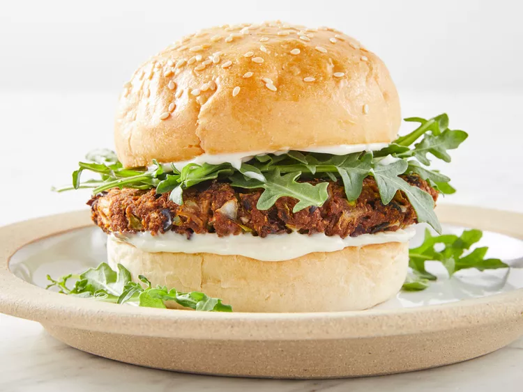

Homemade Black Bean Veggie Burgers

Description
Your vegetarian friends shouldn't have to compromise on flavor, and this veggie burger recipe, specially formulated for backyard cookout purposes, ensures that they'll have a delicious meal option.
Ingredients
- Vegetables: You’ll need canned black beans, half a green bell pepper, and half an onion.
- Seasonings: These black bean burgers are seasoned with fresh garlic, chili powder, cumin, and Thai chili sauce.
- Egg: A whole egg keeps the burgers from drying out and helps bind the patties together.
- Bread crumbs: Use store-bought or homemade bread crumbs.
Steps
- Mash the beans and chop the remaining vegetables and garlic in the food processor.
- Stir the veggies into the beans and combine the seasonings and egg in a separate bowl.
- Mix in the bread crumbs and divide the mixture into patties.
- Grill the patties for about 8 minutes on each side.